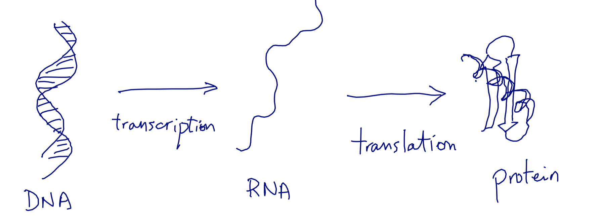
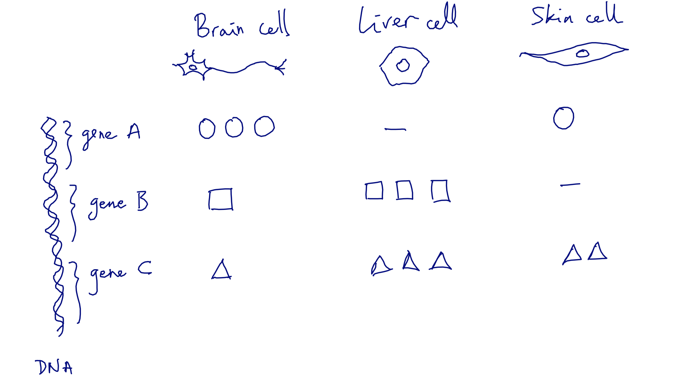
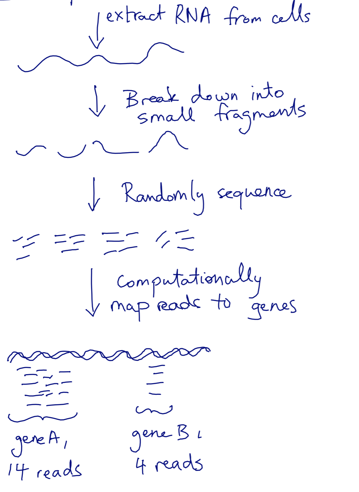
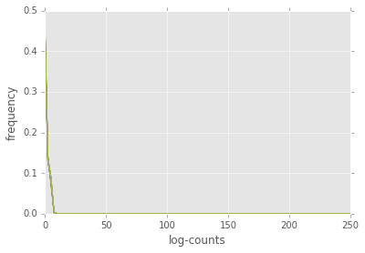
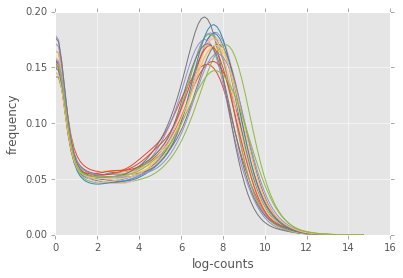
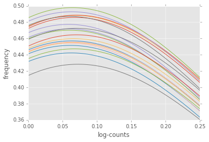

Advanced NumPy¶
%matplotlib inline
Quick example: gene expression, without numpy¶
FIRST...
Even quicker: what is gene expression?¶
How genes work:

What this means:

How we measure it:

Some fake data¶
| | Cell type A | Cell type B | Cell type C | Cell type D | |——–|————-|————-|————-|————-| | Gene 0 | 100 | 200 | 50 | 400 | | Gene 1 | 50 | 0 | 0 | 100 | | Gene 2 | 350 | 100 | 50 | 200 |
gene0 = [100, 200, 50, 400]
gene1 = [50, 0, 0, 100]
gene2 = [350, 100, 50, 200]
expression_data = [gene0, gene1, gene2]
Why is this a bad idea?
Now with NumPy¶
import numpy as np
a = np.array(expression_data)
print(a)
[[100 200 50 400]
[ 50 0 0 100]
[350 100 50 200]]
We are going to:
- Obtain an RPKM expression matrix
- Quantile normalize the data
using the awesome power of NumPy
Inside a numpy ndarray¶
def print_info(a):
print('number of elements:', a.size)
print('number of dimensions:', a.ndim)
print('shape:', a.shape)
print('data type:', a.dtype)
print('strides:', a.strides)
print('flags:', a.flags)
print_info(a)
number of elements: 12
number of dimensions: 2
shape: (3, 4)
data type: int64
strides: (32, 8)
flags: C_CONTIGUOUS : True
F_CONTIGUOUS : False
OWNDATA : True
WRITEABLE : True
ALIGNED : True
UPDATEIFCOPY : False
print(a.data)
<memory at 0x7fa0e836d7e0>
abytes = a.ravel().view(dtype=np.uint8)
print_info(abytes)
number of elements: 96
number of dimensions: 1
shape: (96,)
data type: uint8
strides: (1,)
flags: C_CONTIGUOUS : True
F_CONTIGUOUS : True
OWNDATA : False
WRITEABLE : True
ALIGNED : True
UPDATEIFCOPY : False
print(abytes[:24])
[100 0 0 0 0 0 0 0 200 0 0 0 0 0 0 0 50 0
0 0 0 0 0 0]
Example: take the transpose of a¶
print_info(a)
number of elements: 12
number of dimensions: 2
shape: (3, 4)
data type: int64
strides: (32, 8)
flags: C_CONTIGUOUS : True
F_CONTIGUOUS : False
OWNDATA : True
WRITEABLE : True
ALIGNED : True
UPDATEIFCOPY : False
print_info(a.T)
number of elements: 12
number of dimensions: 2
shape: (4, 3)
data type: int64
strides: (8, 32)
flags: C_CONTIGUOUS : False
F_CONTIGUOUS : True
OWNDATA : False
WRITEABLE : True
ALIGNED : True
UPDATEIFCOPY : False
Example: skipping rows and columns with slicing¶
print_info(a.T)
number of elements: 12
number of dimensions: 2
shape: (4, 3)
data type: int64
strides: (8, 32)
flags: C_CONTIGUOUS : False
F_CONTIGUOUS : True
OWNDATA : False
WRITEABLE : True
ALIGNED : True
UPDATEIFCOPY : False
print_info(a.T[::2])
number of elements: 6
number of dimensions: 2
shape: (2, 3)
data type: int64
strides: (16, 32)
flags: C_CONTIGUOUS : False
F_CONTIGUOUS : False
OWNDATA : False
WRITEABLE : True
ALIGNED : True
UPDATEIFCOPY : False
print_info(a.T[::2, ::2])
number of elements: 4
number of dimensions: 2
shape: (2, 2)
data type: int64
strides: (16, 64)
flags: C_CONTIGUOUS : False
F_CONTIGUOUS : False
OWNDATA : False
WRITEABLE : True
ALIGNED : True
UPDATEIFCOPY : False
Getting a copy¶
b = a
print(b)
[[100 200 50 400]
[ 50 0 0 100]
[350 100 50 200]]
a[0, 0] = 5
print(b)
a[0, 0] = 100
[[ 5 200 50 400]
[ 50 0 0 100]
[350 100 50 200]]
Advanced operations: axis-wise evaluation¶
expr = np.load('../../data/expr.npy')
print_info(expr)
number of elements: 7687500
number of dimensions: 2
shape: (20500, 375)
data type: uint32
strides: (4, 82000)
flags: C_CONTIGUOUS : False
F_CONTIGUOUS : True
OWNDATA : False
WRITEABLE : True
ALIGNED : True
UPDATEIFCOPY : False
This has the raw read count data. However, each sample gets a different number of reads, so we want to normalize by the library size, which is the total number of reads across a column.
The np.sum function returns the sum of all the elements of an array. With the axis argument, you can take the sum along the given axis.
lib_size = np.sum(expr, axis=0)
print(lib_size)
[ 41539237 50824374 35747651 33532890 48162893 83478927 61652756
56043182 50066035 44291909 62103960 52177691 39935196 44712296
49499950 54994779 64874312 41901128 61124396 74947233 55805778
44751480 57419892 45460279 58590618 75900141 79022684 51253368
63148322 64114541 53696942 50946576 55709927 60184139 73887491
51905092 39721522 42746126 43019952 40435776 57789966 30526018
50488171 59600438 49802751 103219262 80445758 76730579 59996715
70611975 53788477 57967905 50450027 61725636 52939093 48355220
60814140 61419740 52865931 42718020 47981997 50989994 55265609
57268101 37174525 65469319 69459796 64633280 52550614 52800398
67603908 42568697 54328614 58801154 41408022 55721943 56051351
48906539 30074621 56514800 61685565 45155573 55190918 58239673
51484868 56456500 58897501 41200475 60510647 45186472 48863100
44723293 66857959 43679229 63454731 40459554 44210528 71649897
51052494 55893243 23880954 37930574 50358271 67084571 55954779
60533989 37534918 58268372 69034028 62187943 31471960 60211327
69060349 52800469 54351395 48929065 55783836 57805383 45280443
64365686 51738764 45503686 20805588 6231205 58912016 58382737
55586370 47844506 88199645 45202180 57012734 35536183 66413476
58255198 67400957 63388779 66920588 89665770 54467447 53674778
60489113 64271298 54482571 57945567 58481866 30468523 46520205
43720270 20860933 62291312 76469475 58273889 62758553 69907767
46323880 58981816 57005722 63065832 55354924 53218346 48332445
50847760 45896941 50855098 66765635 53976120 43076562 64591516
70321285 43164571 19972560 60273622 48626910 62192138 56940941
54212832 47915415 60829977 64420702 47877190 21861554 42351337
56078062 58080584 65786195 69711708 35936611 61273004 40872795
42664688 51610919 42895450 65840053 46914753 52775804 48278133
63447113 46209355 46190947 55448740 40136288 61288618 55819950
61874813 51645078 52880150 56670662 41643222 54351160 38218219
20136141 48512044 54430430 40095409 37135634 47338323 47628500
70593750 61983198 33989258 62762404 32312231 54883550 58804271
47618042 43385504 53262000 51775467 77796207 60667212 58663579
48561056 37776295 41013665 61718896 49617862 46246248 53495544
59868475 65570441 57271936 33651719 42949256 56326986 46188444
65338751 63280380 72026286 45558125 65005023 37707710 36690847
36791707 47339679 40636949 47695871 59847402 65956305 59465169
70009556 58111425 60158442 54800853 54455853 68528086 44581634
45475847 66490471 42291085 35965990 41479598 58860157 36363286
43083690 59348176 58854511 41230056 49617871 43539028 65823859
44602672 50578213 57054596 45886960 66240091 66165612 32463206
47864659 52971575 52220505 25097393 70434480 32039712 32819373
58584329 45039848 59657923 49474656 63730127 65560607 47372745
58633031 63905299 54165552 47486106 52398513 45153699 58159323
19581961 66938365 70099565 62639887 34726837 63115934 69049347
66656207 44194958 43770898 63897405 32572188 21661735 40549383
37659411 45886025 64801505 21061525 59949050 31486861 62661761
49585558 61242121 69353546 60024113 58447218 61229433 44275809
64901114 37277569 36078563 44834451 62844105 53060365 66203234
63269672 52694324 61885104 51421981 59063240 43349098 48320365
89431418 40367656 61502892 64771848 36282255 45373426 66499413
56130605 40281506 45002236 55357976 61842699 30509789 43349038
59621075 69058739 67386247 55079081 28732898 56053773 60685111
39380186 45394727 59700010 54182166]
Exercise¶
Generate a 10 x 3 array of random numbers. From each row, pick the number closest to 0.75. Make use of np.abs and np.argmax to find the column j which contains the closest element in each row.
Advanced operations: broadcasting¶
In order to normalize every column by its corresponding library size, we have to align the two arrays’ axes: each dimension must be either the same size, or one of the arrays must have size 1. Use np.newaxis to match the dimensions.
print(expr.shape)
print(lib_size.shape)
print(lib_size[np.newaxis, :].shape)
(20500, 375)
(375,)
(1, 375)
However, NumPy will automatically prepend singleton dimensions until the array shapes match or there is an error:
np.all(expr / lib_size ==
expr / lib_size[np.newaxis, :])
True
expr_lib = expr / lib_size
We also multiply by $10^6$ in order to keep the numbers on a readable scale (reads per million reads).
expr_lib *= 1e6
Finally, longer genes are more likely to produce reads. So we normalize by the gene length (in kb) to produce a measure of expression called Reads Per Kilobase per Million reads (RPKM).
gene_len = np.load('../../data/gene-lens.npy')
print(gene_len.shape)
(20500,)
Exercise: broadcast expr_lib and gene_len together to produce RPKM¶
rpkm = expr_lib # FIX THIS
import matplotlib.pyplot as plt
from scipy import stats
def plot_col_density(data, xlim=None, *args, **kwargs):
# Use gaussian smoothing to estimate the density
density_per_col = [stats.kde.gaussian_kde(col) for col in data.T]
if xlim is not None:
m, M = xlim
else:
m, M = np.min(data), np.max(data)
x = np.linspace(m, M, 100)
fig, ax = plt.subplots()
for density in density_per_col:
ax.plot(x, density(x), *args, **kwargs)
ax.set_xlabel('log-counts')
ax.set_ylabel('frequency')
if xlim is not None:
ax.set_xlim(xlim)
plt.show()
%matplotlib inline
plt.style.use('ggplot')
plot_col_density(np.log(expr+1)[:, :20])

plot_col_density(np.log(rpkm + 1)[:, :20], xlim=(0, 250))

Exercise: 3D broadcasting¶
Below, produce the array containing the sum of every element in x with every element in y
x = np.random.rand(3, 5)
y = np.random.randint(10, size=8)
z = x # FIX THIS
Fancy indexing¶
You can index arrays with slicing, but also with boolean arrays (including broadcasting!), integer arrays, and individual indices along multiple dimensions.
values = np.array([0, 5, 99])
selector = np.random.randint(0, 3, size=(3, 4))
print(selector)
print(values[selector])
[[0 2 1 2]
[2 0 1 2]
[2 0 1 0]]
[[ 0 99 5 99]
[99 0 5 99]
[99 0 5 0]]
Exercise: quantile normalization¶
Quantile Normalization(https://en.wikipedia.org/wiki/Quantile_normalization) is a method to align distributions. Implement it using NumPy axis-wise operations and fancy indexing.
Hint: look for documentation for scipy.mstats.rankdata, np.sort, and np.argsort.
def qnorm(x):
"""Quantile normalize an input matrix.
Parameters
----------
x : 2D array of float, shape (M, N)
The input data, with each column being a
distribution to normalize.
Returns
-------
xn : 2D array of float, shape (M, N)
The normalized data.
"""
xn = np.copy(x) # replace this by normalizing code
return xn
logexpr = np.log(expr + 1)
logrpkm = np.log(rpkm + 1)
logexprn = qnorm(logexpr)
logrpkmn = qnorm(logrpkm)
plot_col_density(logexprn[:, :20])

plot_col_density(logrpkmn[:, :20], xlim=(0, 0.25))
